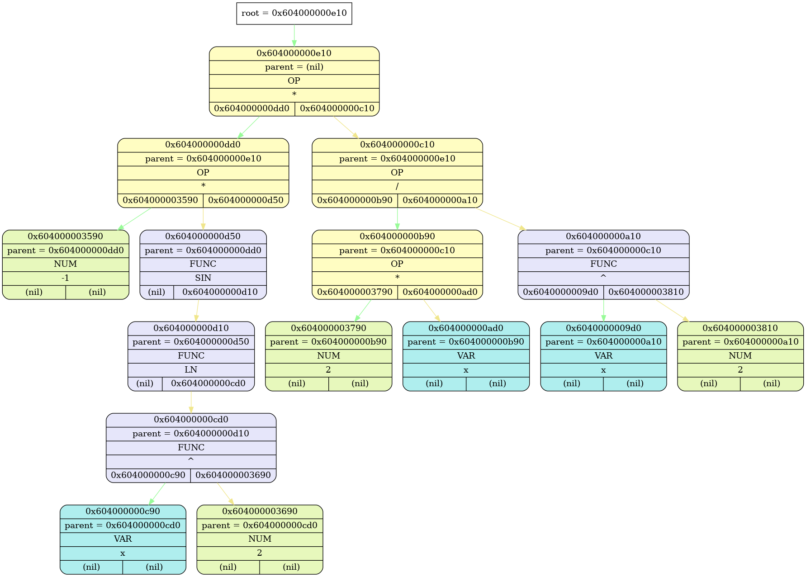

expr_t *expr_ctor(const char *) at ./source/expr_toks.cpp(33):
Tree 0x102e014c0 (OK) "tree" at expr_t *expr_ctor(const char *) at ./source/expr_toks.cpp(27):
{root = 0x103100b10}

int diff_expression(const char *) at ./source/diff.cpp(23):
Tree 0x16f1a73e0 (OK) "&dtree" at int diff_expression(const char *) at ./source/diff.cpp(19):
{root = 0x1031005d0}

int diff_expression(const char *) at ./source/diff.cpp(25):
Tree 0x16f1a73e0 (OK) "&dtree" at int diff_expression(const char *) at ./source/diff.cpp(19):
{root = 0x1031005d0}

Tree 0x16f1a73e0 "&dtree" at int diff_expression(const char *) at ./source/diff.cpp(19): DESTRUCTED
Tree 0x102e014c0 "tree" at expr_t *expr_ctor(const char *) at ./source/expr_toks.cpp(27): DESTRUCTED